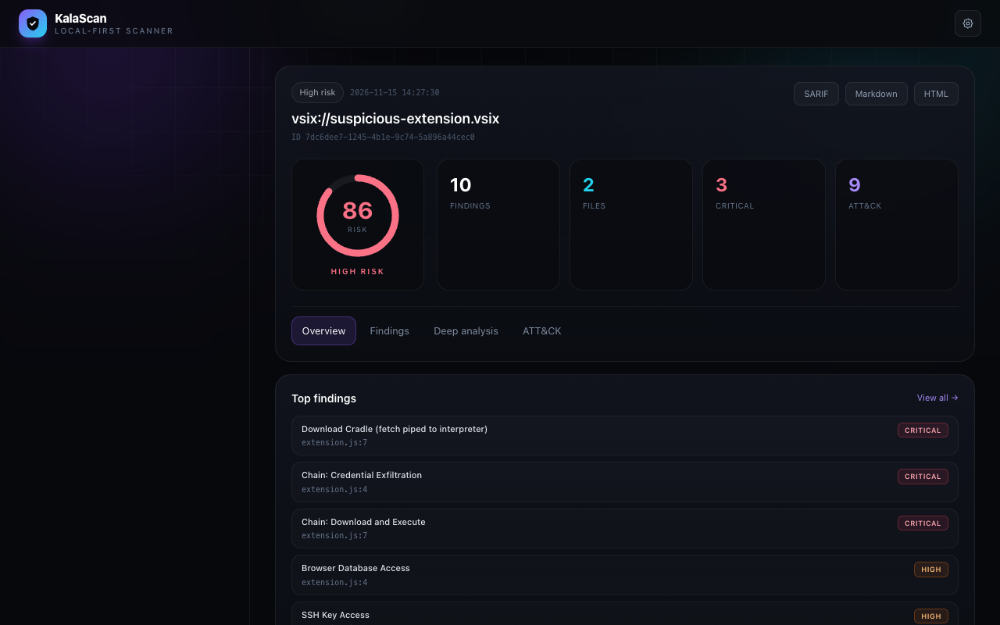

Find malware
before it ships.
KalaScan reads Git repositories, registry packages and IDE extensions for credential stealers, backdoors, obfuscated loaders and supply-chain attacks. It is one Rust binary that runs on your machine, and it executes nothing from the target unless you switch the sandbox on.

Install
Prebuilt binaries exist for Linux (x86_64, aarch64), macOS (universal) and Windows. Every release carries checksums, cosign signatures and an SBOM.
Install script
Linux and macOS. Verifies the checksum before installing.
curl -fsSL https://raw.githubusercontent.com/wahidhendrawan/KalaScan/main/install.sh | shHomebrew
macOS, from the KalaScan tap.
brew tap wahidhendrawan/kalascan
brew trust wahidhendrawan/kalascan
brew install kalascanDocker
Runs the web dashboard on port 3000 behind a token.
docker run --rm -p 3000:3000 \
-e KALASCAN_TOKEN="$(openssl rand -hex 32)" \
ghcr.io/wahidhendrawan/kalascan:latestOne command per question
Every command prints a risk score from 0 to 100 and each finding with its file and line. Add --format sarif, json, md or html for a report, and --fail-on-risk 70 to gate CI.
Is this package safe to add? Scans one exact version from npm, PyPI or crates.io.
kalascan scan npm:express@4.17.1What about everything my lockfile pins? Downloads and scans each locked dependency, highest risk first.
kalascan deps .Is this extension what it claims to be? Works on a marketplace id or a local
.vsix,.crxor.jar.kalascan scan ms-python.pythonWhat is already installed here? Audits the VS Code, Cursor, Windsurf and browser extensions and the Claude Code plugins and skills on this machine.
kalascan installedWhat did this update add? Lists the capabilities only the new version has.
kalascan diff npm:lib@1.4.0 npm:lib@1.4.1Did this pull request bring something in? Scans a checkout and reports only findings not in the baseline.
kalascan scan . --baseline base.json --new-onlyPrefer a browser? Starts the dashboard on
127.0.0.1:3000.kalascan serve
What it finds
A single fetch( or a path to .ssh is weak evidence. KalaScan scores behaviour: it correlates individual hits into chains, and a chain is what moves the score.
- Credential exfiltration
- Browser stores, wallets, SSH keys or editor sessions read next to a webhook, a Telegram bot or a raw-IP upload.
- Download and execute
- A remote script or binary fetched and started, including
curl | shand PowerShell cradles. - Install-time payloads
- npm install scripts and
setup.pyhooks that ship data out or stage a second payload. - Obfuscated loaders
- javascript-obfuscator string tables decoded (plain, base64 and RC4), plus recursive decoding of nested base64, hex, XOR and gzip layers.
- Registry tricks
- Typo-squats, dependency-confusion versions, npm manifest confusion, a dropped provenance attestation, a maintainer email on a lapsed domain.
- Fake and repackaged extensions
- Look-alike publishers, hidden characters in names, and copies of popular extensions republished under another account.
- Workflow attacks
- GitHub Actions pwn requests and script injection from attacker-controlled fields.
- Poisoned agent plugins
- Skills, rule files, MCP configs and hooks with hidden instructions, tool-poisoning descriptions in MCP servers, and hooks that run downloaded code.
- Known-bad dependencies
- OSV advisories, with packages OSV lists as malicious reported as malware rather than as hygiene.
Measured, not claimed
The repository holds a labelled corpus and the harness that scores it. These are the current numbers at risk threshold 50.
The 883 samples were never looked at while writing rules; counting the 626 that were, the total is 1,129 of 1,509. On 461 of them GuardDog 3.2.0 catches 299 (KalaScan 307) and flags 136 of 456 clean packages. Among 595 random packages, five legitimate ones were flagged before rules were fixed (0.8%). The method, the caveats and the samples that get through are written up in the evaluation notes. CI fails any change that makes a clean sample cross the threshold.
Documentation
The README covers every flag; these pages cover how it works.
- ArchitectureModule map, the scan pipeline and how the risk score is computed.
- Detection rulesThe rule format, writing your own rules and YARA.
- Risk scoreBoth score models, how the weights are fitted and what the holdout says.
- Evasion resistanceHow often a caught payload stays caught when it is rewritten, and where it does not.
- Detection coverageSupply-chain attack vectors covered; ATT&CK and MBC for every finding.
- MethodologyWhat is claimed, the threat model, how detection is measured and its known limits.
- Web UI and API securityTokens, roles, what the API refuses to scan.
- READMEEvery command, flag and output format.
- ChangelogWhat changed in each release.
- Security policyHow to report a vulnerability in KalaScan.